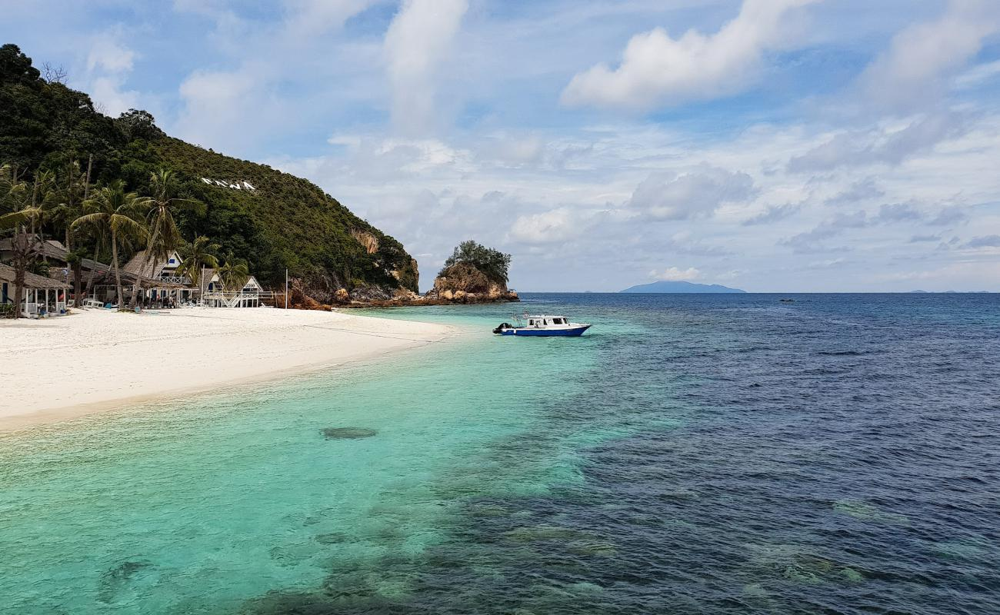

Rawa Island, Johor

Rawa Island is a coral island in mersing, Johor. Owned by the Sultan of Johor, the small island is surrounded by colourful coral reefs and offers a wide variety of exciting water activities and jungle trekking adventure in its lush tropical forest. Taking a refreshing swim in the clean and cool waters of Rawa Island is a must-do activity for every visitor. Nature lovers wouldn’t want to miss the chance to hike up to the top of the hill to enjoy a panoramic view of the South China Sea and watch the sunset, as well as explore the flora and fauna there along the way. Since Rawa Island is just a small island, the trek will take less than 30 minutes and signages are available to lead you to the right trail. You can enjoy a more exhilarating way of diving into the water via the Rawa Slide, a fun giant slide that has become a popular attraction on the island. There are many sea and land creatures such as fishes, squids, jellyfish, octopuses, Malayan sea eagles, and reptiles.